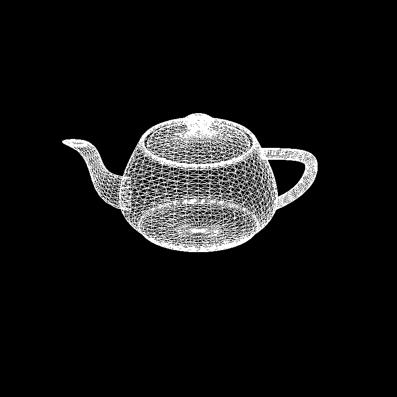
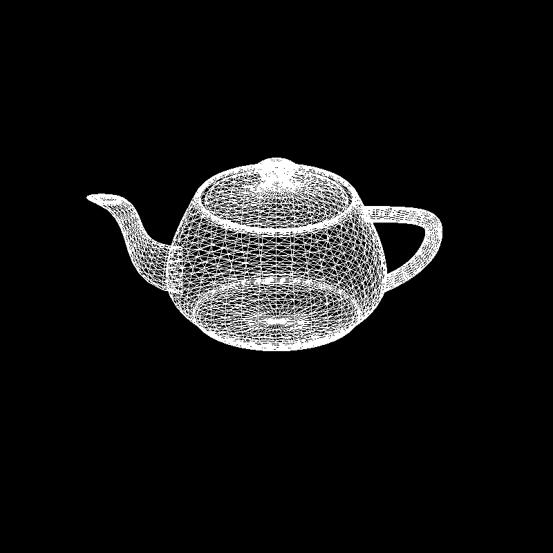

Bezier Surfaces
This is the presentation of the results from the Bezier surface rendering implemented by Siqi Zuo and me. Demo video at this link
Rendered products

Tessellation
According to the requirement, we made two modes of tessellation, uniform and adaptive.
Uniform tessellation
Setting: step size = 0.2, number of triangles generated = 100
We can clearly see a uniform grid being rendered.
adaptive tessellation
We also implemented adatpive tessellation. Pass in '-a' at the end of the command to activate adaptive tessellation
setting: tolerence = 0.05, number of triangles generated = 56
It is evident that the flatter surface(e.g. the bottom of the arch) is tessellated to only two triangles. At the same time, the top of the arch is tessellated to more triangles. Overall this leads to a great reduction of number of triangles being rendered.
Adaptive tessellation Artifects
Although tessellation is supposed to be very efficient, we do observe some artifects if parameter is not set carefully.
Left: uniform tessellation with 0.1 step size, 5200 triangles generated.
Middle and right: adaptive tessellation with 0.05 as tolerence, 834 triangles generated
Compared to the uniform tessellation, the 'edgy' artifect is more easily observed where we can easily tell that a circle is approximated by a few big polygons. For example, in the middle picture, the edge of the teacup and plate shows this effect. This is due to less number of polygons used to tessellate the surface.
Due to the small number of polygon used, there are also shading artifect observed in the thrid picture. Compared to the smooth shading in the first rendering, adaptive tessellation gives a very 'spiky' highlight spot on the surface.
With lower tolerence, the issues resolve themselves
Setting: adaptive tessellation with 0.03 as tolerence, 1492 triangles generated
Key functions
Use 'w' to toggle between fill polygon and wireframes
 

Use 's' to toggle between smooth shading and flat shading
Use arrow key to translate objects. Use shift+arrow key to rotate objects, we support rotation in x and y axes. use '+/-' to zoom in and out. This features are demonstrated in this link
Optional Features
Multiple Objects
Use 'c' to toggle between activated object when multiple objects are loaded. The activated object will appear yellow